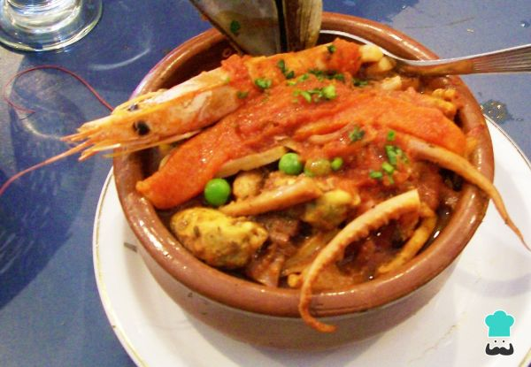
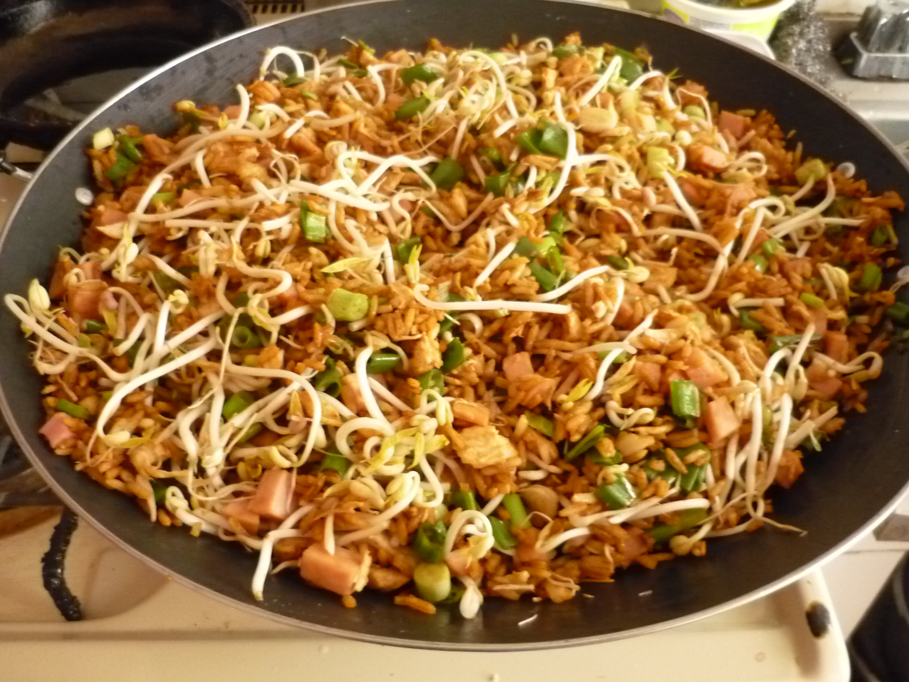

Blog Alex´s
La mejores recetas a tu alcance!
Favoritos:

Platos tipicos
21-10-2017 08:00
Los mariscos son un alimento bajo en grasa y rico en proteínas, así que disfrutarlos con una buena receta fácil de cazuela de mariscos es una opción inmejorable. La cazuela de mariscos colombiana es un plato ideal para compartir en familia en ocasiones especiales. Se puede hacer la cazuela de marisco y pescado, o simplemente con diferentes mariscos. Siéntete como todo un chef preparando este plato de la cocina tradicional latina.
fuente:https://www.recetasgratis.netComida extranjera
21-10-2017 08:00
Preparacion
Cocinar el arroz normal y sin sal, en lo posible el dia anterior
Dorar las carnes a la plancha sin sal y cortarlas en tiras delgadas de 5 cm de largo. Reservar
Lavar y picar los ajies y la cebolla en rama
Lavar los frijoles chinos escurriendolos muy bien
En una sarten grande o si es posible en un wok, ponga a calentar el aceite con los ajos y los ajies dulces, saltee un poco y agregue las carnes, comenzar a colocar de a poco y siempre revolviendo salsa de soja, Ir echando los huevos de a uno revolviendo bien despues de cada adicion, y dejando cocinar entre un huevo y otro, Agregar de a poco el arroz cocido revolviendo constantemente. los frijoles, la cebolla en rama picada y las raices, un poco mas de salsa de soja, siempre revolviendo para que no se pegue.
Cuando se hayan incorporado todos los ingredientes revolver y sacar del fuego,